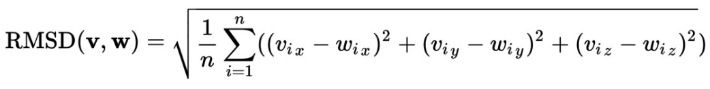
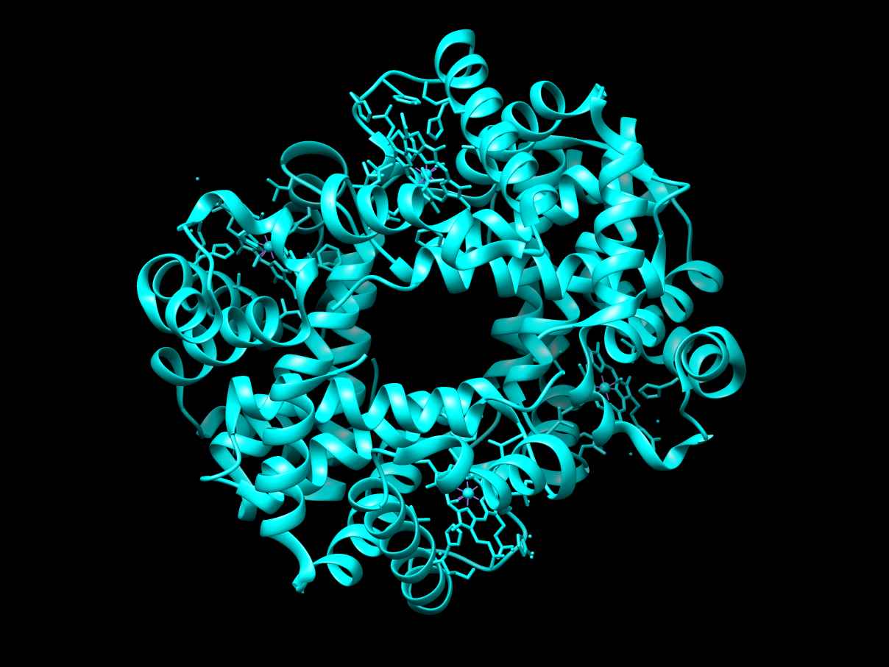
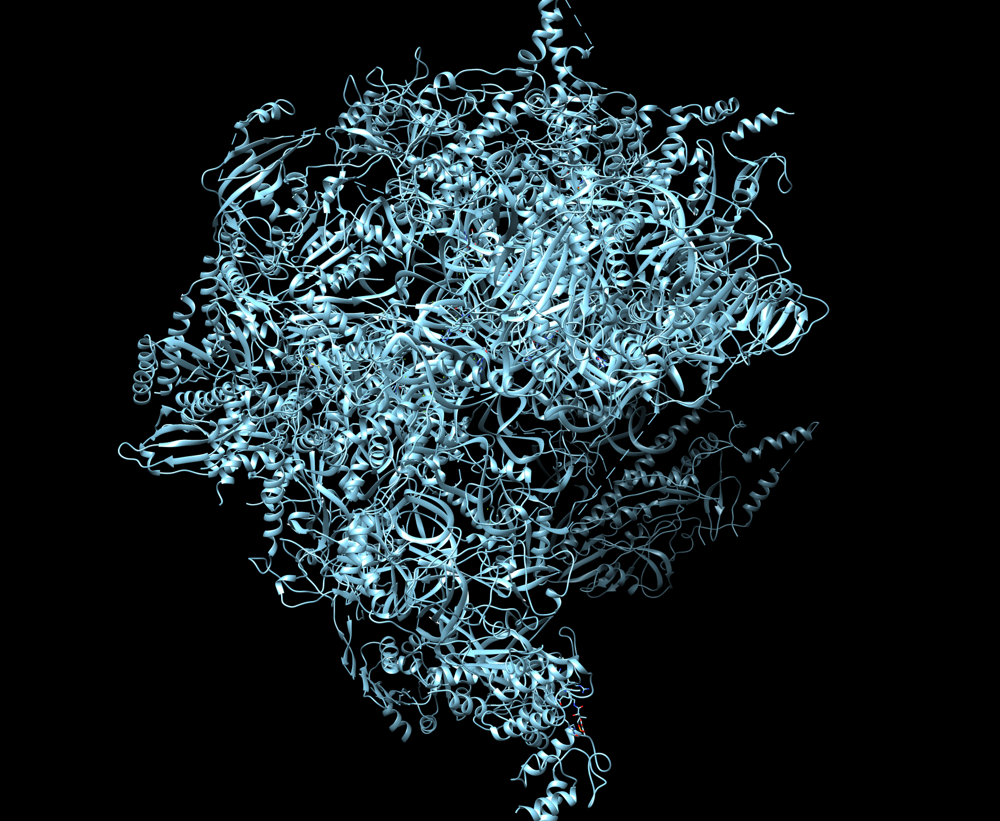
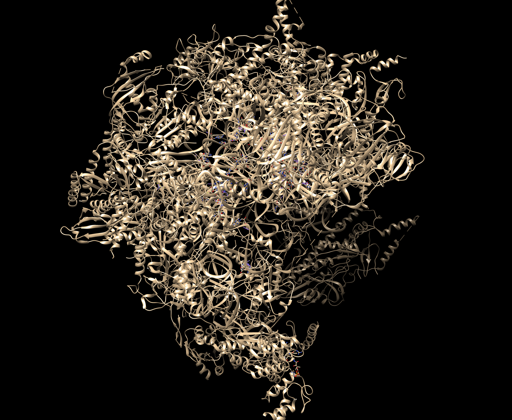
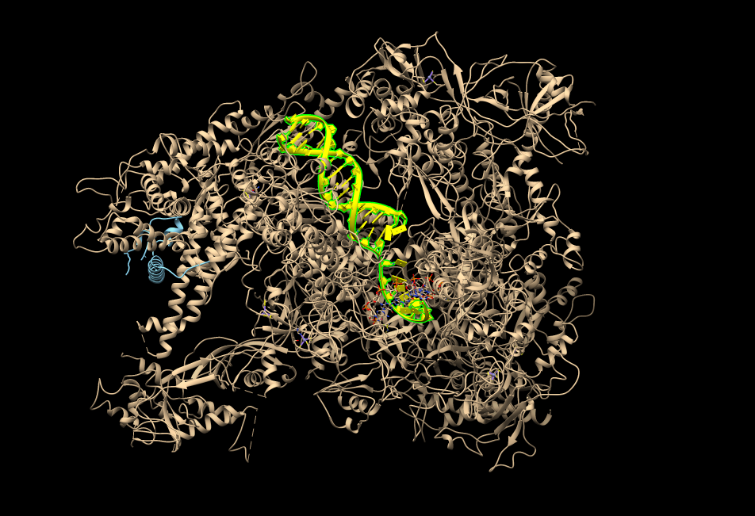
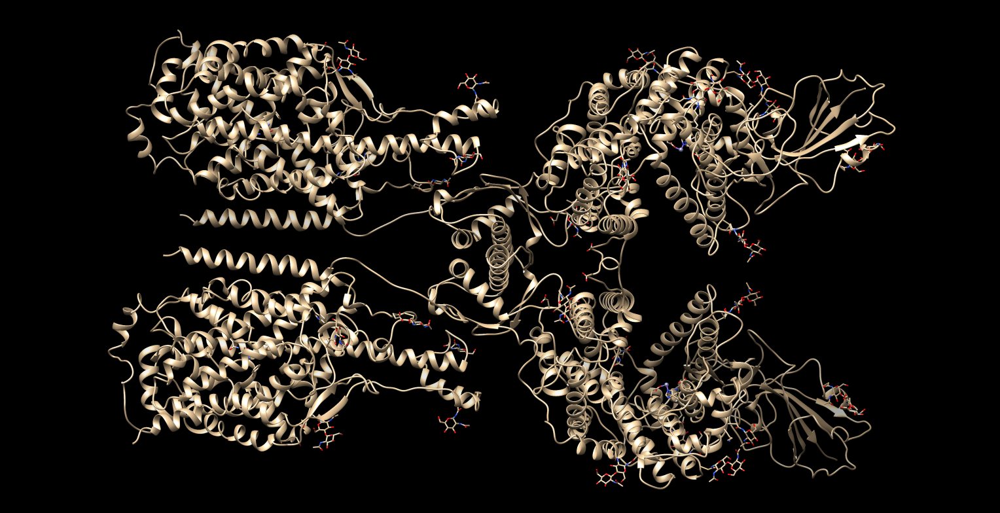
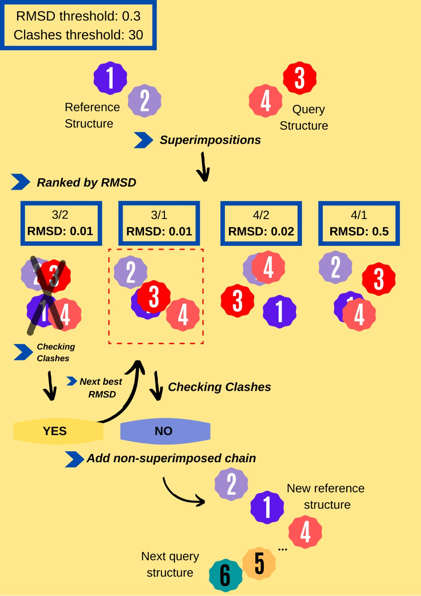

A program to reconstruct biological macrocomplexes superimposing paired interacting elements
protein - protein or protein - DNA
the result is stored in a PDB file
In this project, through bioinformatic resources, we have developed a python based program capable of reconstructing biological macro-complexes of protein-protein and protein-DNA/RNA interactions using pairs of binary chain interactions. Also, the final complex can be set to have a specific number of chains. The program is based on several bioinformatic tools, including structural superimposition, and energy optimization. It creates a structure pdb file with the reconstructed macrocomplex. The main dependencies of the software are BioPython, NumPy , pysimplelog and Modeller packages. This program can be downloaded from GitHub.
McComplex is a Python program whose goal is to model macrocomplexes molecules from pairs of chains of a structure that will form the complex. It can build complexes from proteins chains, DNA and RNA strands. It also allow us to set some parameters to adjust the final complex according to the users needs. In essence, the builder approach is the superimpositions of structures between subunit chains from different PDB files given as input. The builder places pair by pair all the possible chains into a single model, and adds the chains that do not clash more that a given threshold.
The most distinct features of McComplex are:
Proteins are the executive molecules in all organisms.They interact and form multi-molecular complexes in order to perform their function. These interactions are achieved by the combination of distinct electrostatic forces such as hydrogen bonds, hydrophobic effect, disulphide bonds. Nowadays, we use different techniques to solve and model protein complexes such as NMR or X-ray crystallisation, and bioinformatics tools.
Understanding the Protein-Protein Interactions (PPI) and Complexes is key to understand the function of the program. Quaternary protein structures can have more than one separated chains of proteins and they interact between them. These interactions are done by intermolecular bounds, such as hydrogen bounds, electrostatic interactions, pi stacking, cation-pi interaction, and more. These interactions stabilize the molecules and make the protein-protein interaction stable enought to perform biological functions.
These complexes can be by PPI or protein-nucleotides (DNA or RNA) interactions. Some examples are the nucleosome, the spliceosome, the proteasome and the ribosome, the DNA packing, etc. In other words,collecting PPIs can lead to a better understanding of protein functions, biological pathways and mechanisms of disease. However, using just conventional methods is very hard and expensive in terms of time, money, and expertise to do the assembly and the study of these macromolecular due to their large size and structural flexibility.(Biophys. J., 89, 2005) Since computational tools have been designed to store the in silico modeled 3D structures of proteins, many structures of individual subunits and/or interactions can be built in order to predict the complete macromolecular structure(Gupta et al., 2014). In general, all computational approaches to PPI prediction attempt to leverage knowledge of experimentally-determined previously known interactions, in order to predict new PPIs. (Pitre et al., 2008). Many advances have been achieved in this field, however the range of successful organisms is short and general frameworks are lacking at the moment.
There are three main categories of methods for computational modeling of complexes. These are the template-based modeling, which is based on evolutionary information of the sequence and the structure in order to do the PPI prediction; the integrative modelling mixes experimental data techniques with bioinformatics tools, such as superimposition of different PPIs, trhe one used un our program; and lastly ab initio or template-free modelling which explores all the possible orientation between the interacting molecules, this method is computationally very expensive.
Structural superimposition is commonly used to compare multiple conformations of the same protein and to evaluate the quality of the alignments/models produced for a target protein. This technique consists of setting the atoms of a new chain on top of the set of atoms of another chain minimizing the distances between the backbone atoms of both structures. These chains can be two proteins, two DNA/RNA molecules, etc. The difference with sequences alignment is that this last one considers that residues are those that fill the same position in the alignment according to a sequence similarity criteria. However, structural alignment considers that only the closest residues in the space are equivalent. For this purpose, translation and rotation matrices are calculated for one of the chains of the query structure to fit the coordinates of a chain of the other structure (reference). Once two molecules are superimposed, the typical measurement to quatify how different they are,is the Root-Mean-Square Deviation (RMSD). It is the average distance between two sets of atoms (usually the backbone atoms) of the superimposed molecules. Below a value of 3, both structures are considered the as equal. The values are presented as Å and calculated by:
Where n is the number of atom pairs that will be compared, v and w are the molecules that will be compared, i is the number of the the residue, (vix, viy, viz) is the coordinate of one atom of v and (wix, wiy, wiz) are the coordinates from one atom of w superposed with v using a linear application of rotation and translation. To compute the RMSD between molecules v and w, we will use the coordinates of the backbone atoms of residues as close as possible in space after superposition.
The main disadvantage of the RMSD lies in the fact that it is dominated by the amplitudes of errors. Two structures that are identical with the exception of a position of a single loop or a flexible terminus typically have a large global backbone RMSD and cannot be effectively superimposed by any algorithm that optimises the global RMSD.(Kufareva. I. et al. 2015). However it is easy and fast way to analyse the similarity of two structures.
The approach of our program is the superimpositions between subunit chains using the module Superimposer from Bio.PDB. The algorithm can be divided in three steps. The first step is the performance of the superimposition of the binary protein structures. The second one is, energy levels in the models are taken into account to discard unlikely complexes. Lastly, it could do the the optimisation of the energy of the models if it is desired.
To build the model, the program is given a list of PDB files, each of them containing the coordinates of two interacting chains, whether peptidic, DNA or RNA. Then,the query structure chain is superposed to the Cα coordinate of a reference structure (the first file of the list). To do so, translation and rotation matrices are measured in order to performs this, using the superimposition tools that Biopython provides.
After the superimposition, if the RMSD is acceptable under our threshold, it has to check the chain of the sample structure that has not been superimposed. Due to the superimposition, the coordinates of this chain will have been changed, they will have been rotated. To accept this new coordinates, it must check if the atoms of this chain clashes any of the chains already in the reference structure. In our case, this is performed by a Neigbour_rearch object from Biopython. In this way we can know how many clashes this new putative chain is causing. We set a given threshold, but in a real situation, clashes cannot happen, because at minimum distances between two atoms, the energy is too high for the structure to be stabilized. If the number of clashes is below a given threshold, we can allow this new rotation and add the chain in the reference structure. Then, the program runs recursively, so the reference structure will be this newly created one, and the program will repreat the procedure with the next pair of chains.
Once the model is generated, we can perform an optimization of the structure with Conjugate Gradients and Molecular Dynamics, using Modeller. The restraints selected are stereochemical(bond, angle, dihedral, torsion and improper) and the temperature to 300k, with a maximum of 50 iterations. The stats are written every 5 iteration in a log file.
Stereochemical restraints from Modeller :
McComplex_builder.py: main module of Complex Constructor. It connects with all the rest of modules.
McComplex_functions.py: module with all the functions needed to run the construction of macrocomplexes, as the McComplex function and dictionary superimpositor.
parse_logger.py: reads and organises the command-line arguments. Also it imports and initiates the logger
optimization.py: Modeller optimization script.
sequence_data.py: utilities data of DNA, RNA nucleotides names and the AA of protein.
The program McComplex makes possible the construction of biological macro-complexes of protein-protein/RNA/DNA. Here we are going to a more detailes explanation of how McComplex algorithm works
The input to be passed to the program consists of a necessary argument: -i, which is the input directory that contains all of the binary interaction PDB files. These PDB files will be used to build the complex. In addition, there are some arguments that change the operation of the program according to the user needs by changing some parameters that the program will run. These are -rmsd, -cl, -nc and -opt, and they are explained below.
The main function uses a recursive approach. From the list of binary-interaction PDB files chooses the first one. It tries to add all the pairs containing one of these two initial molecules in common in order to build a complex. Them, it will update the files list and will get the next one. The first file will be considered as reference, and all the next ones queries. It will superimpose both chains and store the superimposition with the best RMSD. Then, it will look to the chain that was not superimposed, and in function of the clashes it has with the reference structure will be added or not. If added, the reference complex is now +1 chain bigger. This repeats until the number of chains specified has been reached or until the program reads all the files. Therefore, it stars from a file of a pairwise interaction, the McComplex recursive function is called, which through the dictionary superimposition function performs the previously explained superimposition, rotation and addition in a recursive way.
There are certain required variables in order to run the program when the function is called and they are the following respectively:
ref_structure: it's a reference structure, as it is the first PDB file in the first iteration, it also allows the number of chains to increase as iterations are repeated. files_list: This list contains all of the input files. it: It's an integer to follow the iteration of recursive currently in. parset_no_chains: It's an integer that saves the files that may have been processed or files with no chains added after processing.
ArgumentParser, which contains all arguments that are necessary for the program to work or depends on the user's request. command_arguments are the following:
The file will be processed in each iteration. In the first step, a structure instance will be created from the file and then the function dict_superimposition will be called with a reference, a query structure and RMSD threshold as arguments. This function handles the two chains in the query structure and all chains from the reference to make all possible superimpositions, and rank them by RMSD.(Only if the number of C4’, for nucleic acids or atoms and the number of CA for proteins are the same in both chains, and they are the same kind of molecule. These atoms and molecule type are retrieved by the function Key_atom_retriever ). It returns a sorted dictionary whose keys are tuples of the reference and query chain IDs, and its values the superimposition object of those keys. Also, a boolear variable that indicates whether or not there is superimposition, the best RMSD score in this interation and the the counter of iteration updated.
There are some cases where the boolean is False such as; if there is no common chain between sample structure and reference, or if the smallest RMSD is higher than threshold. In such cases, the current processed file is removed and added to the end of the list, thus, the future iterations will be processed and 1 will be added to the iteration, the function will be called again with files that do not add any chain counters.
In any case, if the RMSD value of the specified reference chain < threshold and if there is a common chain, it loops through the ordered list of key-value tuples with Superimposer objects as value. If its RMSD > threshold, this loop will continue, and is going to the next entry of the ordered list of tuples. However, if RMSD < threshold, we take the superimposer instance, rotation and translation matrices are applied to key atoms of the putative chains that are not common with the reference structure, CA for proteins, or C4 for nucleic acids. with new coordinates, in cases where the user wants to add atoms, the existence of clashes between the new coordinates of the putative chain and the reference structure is controlled by the program.
The number of clashes must be below the threshold for it to continue checking other chains. If none of the currently existing,susceptible to add (putative) chains and set of reference chains to be added has more clashes than the threshold, this program indicates that the current chain to be added does not exist in the complex and also does not clash with any of the other chains that exist, so it will be added. The task of the ID_creator function is to generate a unique ID for this chain that will not have any of the chains that currently exist in the complex. If the chain is correctly appended to the reference structure, according to the value of the --pdb_iterations argument, the program may create a PDB / MMCIF file that will contain the complex structure so far, as usual, the file is popped and added at the end of the list, on the other hand, any of the files that have not been added chains become 0, while the iterations counter increases by 1 and recursive function is called again by the program.
Conversely, If a combination exceeds the clashes threshold, the addition of that rotated chain is canceled because it cannot be added to the complex, which means that it is already in the complex or clashing with a chain.When this happens, a boolean is created that takes the value True. This shows that the chain already exists in the complex. After the loop of reference chains is broken, the next superimposition in the tuple list will be observed. If any of the superimpositions does not provide a chain to add, the loop comes to the end, and then the current file is appended to the end of the list, the iterations and files that can not add a new chain to complex counters were programmed to increment by one and the function calls itself again.
This function will stop running when the user has reached the number of chains requested or as we mentioned above, files are processed once without adding a new chain to the complex (no chains can be added). With this algorithm, the user does not have to specify the number of chains even if the complex structure does not know how many chains it has, at the same time the program will create the target complex and all files will be processed once without any chains added, and then the program will stop running.
In this part, you can find how to use the McComplex with a comment line argument when running the program, which arguments (mandatory or optional) are used, as well as a few examples in detail.
$ git clone https://github.com/ferranpgp/McComplex
In order to make McComplex work, you need some dependencies that must be installed beforehand to run the program. These are Python3, Biopython and pysimplelog. You can do it by hand or running:
$ cd McComplex/
$ python3 setup.py install
Or you can do it manually with pip. However, Modeller should not be installer with pip, as the authors recommend. The recommended way is with Anaconda, but go to modeller's website to know which is the best installation for your system: Modeller website.
As said before, to generate any macrocomplex structure it is required a directory with a list of PDB files with paired structures. All the data needed to execute the following examples is in the folder examples, remember that you have to download it as described in the installation section.
Inside the folder examples there are all the examples we will describe in this tutorial in the corresponding directories: 1gzx, 5fj8, etc. Each of them contains the required files to run McComplex. The reference structures are located in examples/references.
This first example, it is the protein 1GZX which is a small complex composed by two different amino acid chains. Each one of the chain appears two times with a stoichiometry 2A2B, so the final structure has four chains. The following command will recover the complete complex.
Command line execution:
python3 McComplex_builder.py -i examples/1gzx -opt
-i, mandatory, it is followed by the directory of 1gzx folder containing all the binary-interaction PDB files
-opt, optional, from the model, it will create files calles "McComplex.MDxxxx.pdb" with the MD optimization steps, and a final optimized model calles mcComplex_optimized.pdb .
The resulting structure is stored in examples/1gzx_output.
| McComplex | Reference structure | Superimposition |
|---|---|---|
 |
 |  |
In the superimposition image we can observe the reference structure in cian and the output structure in ocher.This color code applies to all the examples, adding the wyellow DNA/RNA when needed. The model fits the reference very well.
The computation time is around 26-27 seconds, and using Chimera we computed the RMSD between 146 pruned atom pairs and obtained a result of 0.000 angstroms.
3KUY is a complex composed by a DNA coil and a core made of protein chains. There are four peptidic chains and one nucleotide chain, all of them have stoichiometry two, a total of 10 chains. The procedure to run this example is the same as the explained before. The data to construct the complex is inside the folder examples/3kuy.
python3 McComplex_builder.py -i examples/3kuy -opt
The resulting structure is stored in the current directory, 3kuy, in the folder examples/3kuy_output.
| McComplex | Reference structure | Superimposition |
|---|---|---|
 |
 |
 |
We observe that the whole complex is correctly constructed and after superimposing the output structure with the structure downloaded from PDB, we can see that both protein chains and DNA chains fit quite well with the reference structure.
The computation time is around 65-66 seconds, and using Chimera we computed the RMSD between 106 pruned atom pairs and obtained a result of 0.000 angstroms.
This third example is the native assembly intermediate of the human mitochondrial ribosome with unfolded interfacial rRNA. It is a Hetero 53-mer with a stoichiometry: ABCDEFGHIJKLMNOPQRSTUVWXYZabcdefghijklmnopqrstuvwxyzA. The data to construct the complex is inside the folder examples/5oom. Based on the input provided, the following command will recover the complete complex:
python3 McComplex_builder.py -i 5oom -opt
The input folder contains 125 files and 53 different chains. It is worth to put attention to this structure due to that it has also RNA molecules.
| McComplex | Reference structure | Superimposition |
|---|---|---|
|  |  |  |
The computation time is around 1275 seconds and using Chimera we computed the RMSD between 385 pruned atom pairs and obtained a result of 0.000 angstroms.
This is the Human 20S Proteasome (4R3O). It is a symmetric proteic complex with14 different chains. All the chains have a stoichiometry two.
The input data can be found in examples/4r3o.
python3 McComplex_builder.py -i examples/4r3o -opt
We can see how a third of the molecule is not fitting the refference, although it is like its shadow, this can be due to some issue in a superimposition, accumulated until the end of the construction, given that the program constructs over strucures product of previous superimpositions.
The resulting structure is stored examples/4r3o_output.
| McComplex | Reference structure | Superimposition |
|---|---|---|
 |
 |
 |
The input folder has 86 files and 28 different chains and we can see that after 155 interations the total number of chains were built. The computation time is around 1621 seconds seconds and using Chimera we computed the RMSD between 250 pruned atom pairs and obtained a result of 0.000 angstroms.
This complex is composed by nucleotides andproteins. Also, it has 20 different chains and non of them are repeated which means that all are unique in the complex. The required inputs for the construction are in examples/5fj8.
python3 McComplex_builder.py -i examples/5fj8 -nc 20 -opt
The resulting structures is are stored in the current directory, 5fj8, in the folder called 5fj8_output. It took several minutes to assemble, and the color of the reference is not changed due to the computers crashing.
| McComplex | Reference structure | Superimposition |
|---|---|---|
 |
 |
 |
The model that was created by McComplex and the reference structure are very well superimposed. We set a number of chain equal to 20 the model did reach this chain, otherwise, it will not finish.
The computation time is around 215 seconds and using Chimera we computed the RMSD between 1422 pruned atom pairs and obtained a result of 0.000 angstroms.
6m17 structure is a membrane protein of the SARS coronavirus. It was released at PDB on march 2020.It has three different amino acid chains and all of them have stoichiometry two, making a total of 6 chains. The data is inside the folder examples/6m17.
$ python3 McComplex_builder.py -i examples/6m17 -opt
The resulting structure is stored in the folder examples/6m17_ouput.
| McComplex | Reference structure | Superimposition |
|---|---|---|
 |
 |
 |
We can see that the whole complex was constructed correctly. The superimposition between the McComplex structure with the original structure from PDB shows that all the chains fit quite well with the reference structure.
The computation time is around 106 seconds and using Chimera we computed the RMSD between 748 pruned atom pairs and obtained a result of 0.000 angstroms.
To understand deeply how superimposition work we will put an examples. If we have have two binary protein interactions, reference: 1-2, query:3-4. There will be four superimpositions between the query chains and the reference, 3-2, 3-1, 4-2, 4-1. Then, they will be ranked by RMSD. It starts processing the lowest RMSD (and below a given threshold) superimposition, for example the 3-2 superimposition, then 3-1 and so on so forth. If we assume that chains 1 and 3 are equal, and it seems to be correct when it gets the interaction with the non-superimposed chain called 4. Now, what it is needed is to check whether or not there are collisions or clashes between the non-superimposed chain and the references structure chains 1 and 2. If a high number of clashes are found means that the assumed chain to add is in the complex or it is colliding with another chain. So, even though the superimposition has a an acceptable RMDS value, the precence of clashed make the program to rejecte that model. Then it looks for next best RMSD score and check the number of clashes again in the new superimposition and it repeats the same until all chains are superimposed. Also, it check if the number of clashes is below the threshold. Therefore, the final structure will be 2-1-4. We can keep following the same strategy with the next binary interaction. However, there will be more superimpositions and comparison to make than chains.

Our knowledge from now is very limited in order to develop a refined algorithms. However, we would have liked to improve the project in order to improve the user experience and the accessibility to existing data. Also, previous evaluation of the files could lead to a more optimized algorithm. This one is very straight-forward and was accessible to us to understand, but it is not the most efficient. Another caveat of our program is the lack of stoichiometry arguments and the mandatory equal length of the chains for superimposition. But at this stage of our programming skills, we were not able to implement it and we priorized making the main approach work (which on its own took most of our time) Also it would be very useful to have an automatic download of structures from public databases, such as Uniprot or PDB. The structure and the sequences would be obtained by Biopython modules and some keyword and ID search.These would be use automatically as input data in a script that would build the pair of interacting molecules in order to run McComplex. Finally, Integrating some kind of visual evaluation of the energies such a PROSA-like program would be interesting.
| Ferran Pegenaute | Maria Lucia Romero | Ipek Aktan |
Biophys. J. Global rigid body modeling of macromolecular complexes against small-angle scattering data. 89 (2005), pp. 1237-1250, 10.1529 biophysj.105.064154
Chang, J., Zhou, Y., Qamar, M. T. U., et al. Prediction of protein–protein interactions by evidence combining methods. International Journal of Molecular Sciences 17, 1946 (2016). doi: 10.3390/ijms17111946
Gupta, C. L., Akhtar, S., & Bajpai, P. (2014). In silico protein modeling: possibilities and limitations. EXCLI journal, 13, 513–515.)
Hayes, S., Malacrida, B. , Kiely, M., Kiely, P. A. Studying protein–protein interactions: progress, pitfalls and solutions. Biochemical Society Transactions 44, 994-1004. doi: 10.1042/BST20160092
Kufareva, I., & Abagyan, R. (2012). Methods of protein structure comparison. Methods in molecular biology (Clifton, N.J.), 857, 231–257. https://doi.org/10.1007/978-1-61779-588-6_10
Liu, S., Liu, C., Deng, L. Machine learning approaches for protein–protein interaction hot spot prediction: progress and comparative assessment. Molecules 23, 2535 (2018). doi: 10.3390/molecules23102535
Nealon, J. O., Philomina, L. S., McGuffin, L. J. Predictive and experimental approaches for elucidating protein–protein interactions and quaternary structures. International Journal of Molecular Sciences, 2623 (2017). doi: 10.3390/ijms18122623
Keskin, O. , Tuncbag, N. , Gursoy, A. Predicting protein-protein interactions from the molecular to the proteome level. Chemical Reviews 116, 4884-4909 (2016). doi: 10.1021/acs.chemrev.5b00683